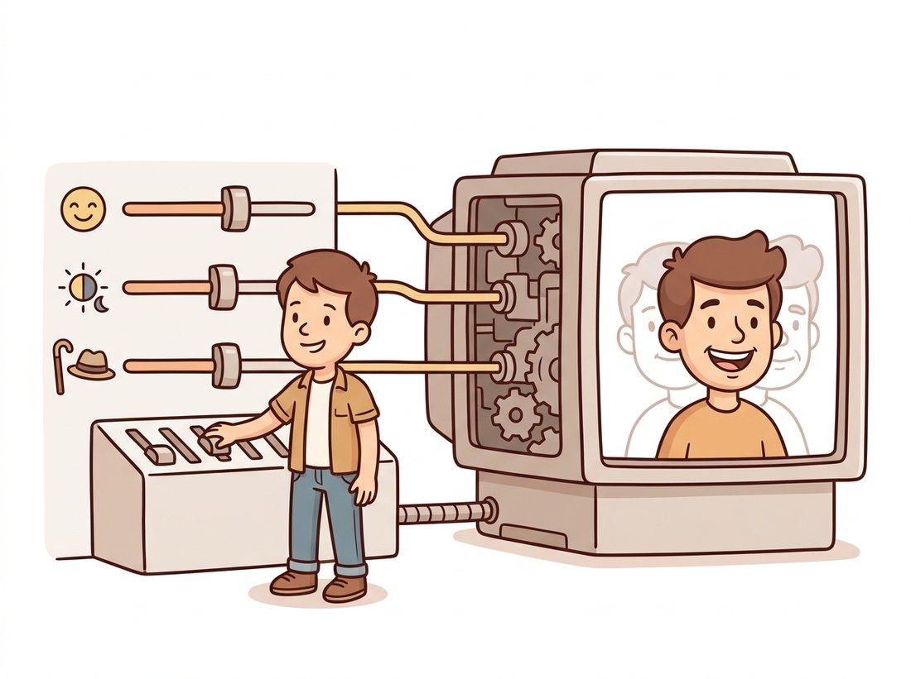

"They told me I was three hundred numbers. I was insulted, until I learned that nudging the forty-second number put a smile on every face I decoded, and the eighty-first turned the lights to evening. Three hundred numbers, it turns out, is enough to hold a person. The trick was which three hundred."
A Latent Code Still Discovering Its Own Axes
A latent variable is a low-dimensional code $\mathbf{z}$ that a decoder turns into a high-dimensional image, and the space of all such codes, the latent space, is where most of the controllable magic of generative vision happens. Instead of modeling $p(\mathbf{x})$ directly over pixels, a latent-variable model factors it through a hidden cause: draw a code from a simple prior, then decode it. This single move does three things at once. It makes a hard distribution tractable by pushing the complexity into the decoder. It gives the manifold of Section 30.1 an explicit coordinate system, so that smooth motion in latent space becomes smooth motion along the manifold of real images. And it turns editing into arithmetic: interpolate between two codes and you morph between two images, add a learned direction and you add a smile. This section defines the latent-variable model precisely, shows why its space is structured, and introduces the disentanglement question that the rest of Part IV keeps circling back to.
In Section 30.2 three of the five families, VAE, GAN, and latent diffusion, all began the same way: draw a latent $\mathbf{z}$, then decode it to an image. That shared first move is the subject of this section. We will define what a latent-variable model is and the marginalization that connects the code to the image, build intuition for why a few hundred numbers can hold a whole picture, see the two operations (interpolation and latent arithmetic) that make latent spaces so useful for editing, and end on disentanglement, the open question of whether the axes of the latent space can be made to mean something. This is the conceptual groundwork that Chapter 31 turns into a trainable VAE and that Chapter 35 exploits for editing.
1. The Latent-Variable Model Beginner
A latent-variable model explains the observed data $\mathbf{x}$ through an unobserved (latent) cause $\mathbf{z}$. We specify two things: a simple prior $p(\mathbf{z})$ over codes, almost always a standard Gaussian $\mathcal{N}(\mathbf{0}, \mathbf{I})$, and a decoder $p_\theta(\mathbf{x} \mid \mathbf{z})$, a neural network that maps a code to a distribution over images. The model's distribution over images is then the marginal, obtained by integrating out the hidden code:
Read this as a recipe: to generate, sample a code $\mathbf{z} \sim p(\mathbf{z})$ from the simple prior, then push it through the decoder to get an image. The hard, multimodal distribution over pixels is built by warping a simple Gaussian through a flexible network. The latent dimension $d$ (the length of $\mathbf{z}$) is chosen far smaller than the pixel dimension, typically a few hundred against the hundred-and-fifty thousand of Section 30.1, which forces the decoder to discover the manifold's intrinsic coordinates rather than memorize pixels. Figure 30.3.1 shows the geometry: a Gaussian blob in latent space, warped by the decoder into the curved sheet of real images.
The deep reason latent-variable models work is a division of labor. The prior $p(\mathbf{z})$ is kept trivially simple (an isotropic Gaussian you can sample in one line), and all of the complexity of the data distribution, every correlation between pixels, every constraint of geometry and lighting, is absorbed into the decoder network. This is why sampling is easy: drawing from a Gaussian is trivial, and the decoder does the rest in a single pass. It is also why the latent space tends to be smooth and well-behaved: a continuous decoder maps the continuous Gaussian to a continuous manifold, so small steps in $\mathbf{z}$ produce small, sensible changes in $\mathbf{x}$. That smoothness is not an accident; it is the property the next two operations exploit.
2. Why a Few Numbers Hold a Picture Beginner
It can feel implausible that two hundred and fifty-six numbers could encode a detailed face. The manifold hypothesis of Section 30.1 is the answer: a face is not an arbitrary array of pixels but a highly constrained object whose true degrees of freedom, identity, pose, expression, lighting, are few. The latent code is meant to carry those degrees of freedom, and the decoder supplies everything that is shared across all faces (that they have two eyes, that skin has texture, that shadows obey light). The representation-learning chapters of Part III already prepared you for this: in Chapter 25 a learned embedding vector summarized the semantic content of an image. The latent code is the same idea run in reverse, a vector you decode into an image rather than encode from one.
The snippet below makes the dimensions concrete and shows the single line that defines sampling for any latent-variable generator. The compression ratio it prints, image dimension over latent dimension, is a direct numerical statement of the manifold hypothesis at work.
# Build a minimal decoder that maps a 256-D latent code to a 64x64 color image,
# and confirm the compression ratio: a few hundred numbers stand in for ~12k pixels.
# Sampling is then one line: draw codes from N(0, I) and decode them.
import torch
import torch.nn as nn
latent_dim = 256
img_shape = (3, 64, 64) # a modest color image
img_dim = 3 * 64 * 64
print(f"latent dim {latent_dim}, image dim {img_dim}, "
f"compression {img_dim / latent_dim:.0f}x")
# latent dim 256, image dim 12288, compression 48x
# A minimal decoder: latent vector -> image. The complexity lives in these weights.
decoder = nn.Sequential(
nn.Linear(latent_dim, 4 * 4 * 256), nn.ReLU(),
nn.Unflatten(1, (256, 4, 4)),
nn.ConvTranspose2d(256, 128, 4, stride=2, padding=1), nn.ReLU(), # 4 -> 8
nn.ConvTranspose2d(128, 64, 4, stride=2, padding=1), nn.ReLU(), # 8 -> 16
nn.ConvTranspose2d(64, 32, 4, stride=2, padding=1), nn.ReLU(), # 16 -> 32
nn.ConvTranspose2d(32, 3, 4, stride=2, padding=1), nn.Tanh(), # 32 -> 64
)
# Sampling is one line: draw from the prior, decode.
z = torch.randn(8, latent_dim) # 8 codes from N(0, I)
images = decoder(z) # 8 images, shape (8, 3, 64, 64)
print("sampled batch:", tuple(images.shape)) # sampled batch: (8, 3, 64, 64)decoder mapping a 256-dimensional latent to a 64-by-64 color image, a roughly 48-fold compression. Sampling is the single line decoder(torch.randn(8, latent_dim)): draw codes from the Gaussian prior and decode them. The four ConvTranspose2d layers progressively double spatial resolution (4 to 8 to 16 to 32 to 64), the upsampling counterpart of the strided convolutions you met building CNNs in Chapter 19.A 256-number latent code is the most flattering compression a face will ever receive: every freckle, pore, and bad-hair-day is quietly delegated to the decoder, which has agreed to handle "the boring parts everyone has anyway". You get to be 256 numbers of pure essence. The decoder gets to be the unsung makeup department.
3. Interpolation: Walking the Manifold Intermediate
Because the decoder is continuous and the latent space is smooth, you can interpolate: take two codes $\mathbf{z}_a$ and $\mathbf{z}_b$, walk along the path between them, and decode each waypoint. The result is a sequence of images that morphs smoothly from $\mathbf{x}_a$ to $\mathbf{x}_b$, every intermediate frame a plausible image rather than a pixel-wise crossfade. This is the clearest demonstration that the latent space has captured the manifold: a straight line between two real codes stays (approximately) on the manifold of real images.
One subtlety matters, and it is geometric. The Gaussian prior concentrates its mass on a thin shell at radius $\sqrt{d}$: each of the $d$ coordinates contributes roughly one unit of squared length, so a typical code has length near $\sqrt{d}$ and the exact center is vanishingly rare, counterintuitive but true once $d$ is large. A straight linear interpolation passes through that low-density center and can produce washed-out midpoints. Spherical linear interpolation (slerp) follows the great-circle arc on the shell instead, keeping every waypoint in a high-density region.
The shell fact sounds abstract until you put a number on it. For a 256-number face code, a typical sample has length near $\sqrt{256} = 16$, and the standard deviation of that length is under $0.5$, so essentially every code the model ever sees sits in a paper-thin shell at radius $16$, give or take half a unit. The origin, the "average code" you might naively interpolate through, is about $32$ standard deviations away from where the data lives; the decoder has effectively never been trained anywhere near it. So the midpoint of a straight line between two faces does not land on a blurry average face, it lands in a region of latent space the decoder has literally never visited, which is why naive linear interpolation washes out exactly halfway and slerp, by hugging the radius-$16$ shell the whole way, does not. The emptiest point in a high-dimensional Gaussian is its own center.
# Two ways to walk between two latent codes. lerp takes the straight chord and can
# dip through the empty center; slerp follows the great-circle arc on the Gaussian
# shell, keeping every waypoint in a high-density region the decoder handles well.
import torch
def lerp(z_a, z_b, t):
"""Straight-line interpolation; can dip through the low-density center."""
return (1 - t) * z_a + t * z_b
def slerp(z_a, z_b, t):
"""Spherical interpolation along the Gaussian shell; stays in high-density region."""
a = z_a / z_a.norm()
b = z_b / z_b.norm()
omega = torch.acos((a * b).sum().clamp(-1, 1)) # angle between the two codes
so = torch.sin(omega)
if so.abs() < 1e-6: # codes nearly parallel
return lerp(z_a, z_b, t)
return (torch.sin((1 - t) * omega) / so) * z_a + (torch.sin(t * omega) / so) * z_b
z_a, z_b = torch.randn(256), torch.randn(256)
path = torch.stack([slerp(z_a, z_b, t) for t in torch.linspace(0, 1, 9)])
print("interpolation path:", tuple(path.shape)) # interpolation path: (9, 256)
# Decoding `path` yields 9 frames morphing smoothly from image A to image B.slerp follows the great-circle arc on the Gaussian's high-density shell (the omega angle and its sines), so every interpolated code decodes to a sharp, plausible image, where naive lerp can pass through the empty center and produce a blurry midpoint. Decoding the nine-step path built by torch.linspace(0, 1, 9) gives a smooth morph between the two endpoint images.4. Latent Arithmetic: Editing by Adding Vectors Intermediate
The second great trick is latent arithmetic. If a particular semantic attribute (smiling, wearing glasses, time of day) corresponds to a consistent direction in latent space, then adding a multiple of that direction to any code edits that attribute while leaving the rest of the image alone. The classic demonstration computed an "add a smile" vector as the difference between the average code of smiling faces and the average code of neutral faces; adding it to a frowning face's code produced a smiling version of the same person. Decode $\mathbf{z} + \alpha \, \mathbf{d}_{\text{smile}}$ for increasing $\alpha$ and you slide the expression from neutral to broad grin. This is the seed of all latent-space editing, and it is exactly what Chapter 35 scales up to inverting a real photo into a generator's latent space and editing it there. The illustration below shows the idea as a control panel: a few sliders feed a bulky decoder, and nudging one direction slides a single attribute.

# Edit an attribute by adding a vector. Estimate a semantic direction as the
# difference of group means (smiling minus neutral), then slide any code along it.
# In practice the group codes come from an encoder or from GAN inversion.
import torch
smiling_codes = torch.randn(100, 256) # codes of smiling faces
neutral_codes = torch.randn(100, 256) # codes of neutral faces
# An attribute DIRECTION is the difference of group means.
smile_dir = smiling_codes.mean(0) - neutral_codes.mean(0)
smile_dir = smile_dir / smile_dir.norm() # unit direction
z = torch.randn(256) # the face we want to edit
edited = torch.stack([z + alpha * smile_dir # slide along the smile axis
for alpha in torch.linspace(0, 3, 6)])
print("edit sequence:", tuple(edited.shape)) # edit sequence: (6, 256)
# Decoding `edited` shows the SAME identity gaining a progressively wider smile.smile_dir vector is estimated as the difference between smiling_codes.mean(0) and neutral_codes.mean(0), then normalized to unit length; adding alpha * smile_dir for increasing alpha slides any code along the smile axis while preserving identity. This difference-of-means recipe is the conceptual ancestor of the controllable-editing methods in Chapter 35.Who: a product team building a character-creation tool for an indie game studio. Situation: artists wanted to generate diverse non-player-character faces and then tweak them with intuitive sliders (older, friendlier, more tired) rather than redrawing. Problem: exposing a raw 512-dimensional latent vector to artists is useless; nobody can dial in a face by typing 512 numbers. Dilemma: option one was to train separate conditional generators for each attribute, accurate but a new training run per control and weeks of work; option two was to fine-tune the generator with attribute labels every time artists wanted a new slider; option three was to leave the single pretrained generator untouched and find editable directions in its existing latent space. Decision: the team used a pretrained face generator and, offline, computed five attribute directions by the difference-of-means recipe above, age, friendliness, fatigue, lighting, and smile, each estimated from a few hundred labeled example codes. How: they wired each direction to a slider; moving a slider added a scaled multiple of that one direction to the current 512-dimensional code, and the generator re-decoded in real time, so the entire control rig was five precomputed vectors rather than five trained models. Result: artists generated a base face by sampling, then sculpted it with semantic sliders, getting controllable variety without any per-face redrawing, and the same five sliders worked on every generated identity. Lesson: the structure of the latent space is a product feature, not just a theoretical nicety. Because directions are roughly consistent across the space, a direction estimated once becomes a reusable control for every sample, which is precisely why "edit by latent arithmetic" graduated from a paper demo to a shipping tool.
5. Disentanglement: Do the Axes Mean Anything? Advanced
Latent arithmetic works best when the latent space is disentangled: when distinct factors of variation (pose, identity, expression, lighting) are encoded along separate, independent directions, ideally aligned with the coordinate axes themselves. In a perfectly disentangled space, changing one coordinate would change exactly one human-meaningful property and nothing else. Real latent spaces are only partially disentangled; attributes are tangled together, so the smile direction may also slightly age the face. Methods such as the $\beta$-VAE (which up-weights the KL term in the ELBO to encourage independent latent coordinates) and StyleGAN's intermediate $\mathcal{W}$ space (a learned, less entangled latent than the input Gaussian) push toward disentanglement, and you will meet both later in the part. There is also a fundamental result that fully unsupervised disentanglement is impossible without some inductive bias or weak supervision, so the practical goal is a usefully structured space, not a perfectly factored one.
You do not have to train a generator and discover its directions from scratch to experiment with latent editing. For an unconditional pixel-space model the starting noise tensor is the latent code, so loading a trained model and its scheduler from diffusers lets you interpolate two seeds and denoise each one in a few lines:
# Latent interpolation on a pretrained model: the starting noise tensor IS the
# latent code, so interpolate two seeds and run the deterministic DDIM denoiser
# on each waypoint to get a smooth morph, the slerp idea on a model that learned faces.
import torch
from diffusers import UNet2DModel, DDIMScheduler
model = UNet2DModel.from_pretrained("google/ddpm-celebahq-256").to("cuda")
scheduler = DDIMScheduler.from_pretrained("google/ddpm-celebahq-256")
scheduler.set_timesteps(50)
# The model's input noise IS its latent code; interpolate two seeds.
g = torch.Generator("cuda")
z_a = torch.randn(1, 3, 256, 256, generator=g.manual_seed(0), device="cuda")
z_b = torch.randn(1, 3, 256, 256, generator=g.manual_seed(1), device="cuda")
def denoise(latent): # deterministic DDIM denoise
x = latent.clone()
for t in scheduler.timesteps:
noise_pred = model(x, t).sample
x = scheduler.step(noise_pred, t, x).prev_sample
return x
frames = [denoise(torch.lerp(z_a, z_b, t)) # a 5-frame latent interpolation
for t in torch.linspace(0, 1, 5)]diffusers model. The seeds z_a and z_b are the model's latent codes, so torch.lerp(z_a, z_b, t) across five values of t and the deterministic denoise DDIM loop on each waypoint produce a five-frame morph, the same interpolation the from-scratch slerp above performs, now on a model that has actually learned faces.The library handles the trained model, the scheduler, and the denoising step math; what would be a generator definition, a training run, and a hand-written sampler becomes a short loop over interpolated starting latents. The from-scratch slerp and difference-of-means code above exists so you understand what is happening to that latent under the hood. A text-to-image pipeline such as StableDiffusionPipeline exposes the same idea even more directly through its latents= argument, which you will use in Chapter 34.
A vibrant 2023 to 2026 line of work asks how to discover semantic latent directions without any attribute labels at all. GANSpace (Harkonen et al., 2020) and SeFa (Shen and Zhou, CVPR 2021) found editing directions by principal-component or closed-form analysis of a generator's weights; more recent work locates interpretable directions inside diffusion models' bottleneck activations (the so-called h-space identified by Kwon et al., "Diffusion Models Already Have a Semantic Latent Space", ICLR 2023) and inside the cross-attention layers that bind text to image, so that "make it night" can be applied to a generated scene without ever labeling a night-versus-day dataset. The text-to-image systems of Chapter 34 blur the line further: the prompt itself becomes a coordinate system, and editing a caption is a form of latent navigation. The open question that began with the entangled smile direction, can we get a latent space whose axes are independently meaningful, is now being attacked inside diffusion models and at the text-conditioning layer, not only in the input noise.
This frontier is unusually open to a motivated student because the tooling is public. The GANSpace code (Harkonen et al., 2020, github.com/harskish/ganspace) finds editing directions by running principal-component analysis on the activations of a pretrained generator, no attribute labels required, and the SeFa code (Shen and Zhou, CVPR 2021, github.com/genforce/sefa) does the same in closed form from the generator's weights in under a second. Take a pretrained face generator, extract a handful of top directions with each method, decode a sweep along each one, and label by eye what each direction controls (pose, age, lighting). Then check the entanglement claim of Section 5 directly: does any single direction change exactly one attribute, or do they bleed into each other? It is a self-contained project that turns the abstract disentanglement question into something you can see, and it lands you on the methods this part returns to in Chapter 32.
6. Why This Matters for the Whole Part Beginner
The latent space is the through-line of generative vision. It is the object the VAE learns to populate in Chapter 31, the space a GAN's generator reads from in Chapter 32, the compressed domain that latent diffusion operates in for efficiency in Chapter 33, and the canvas that editing tools manipulate in Chapter 35. Holding the three operations of this section, sample from the prior, interpolate along the manifold, and edit by adding directions, will let you read every one of those chapters as variations on a theme you already understand. The remaining foundational idea, how to learn the distribution when we refuse to use a latent and instead model the data's gradient field directly, is the energy and score view of the next section.
The Gaussian prior in $d$ dimensions concentrates its mass near a shell of radius $\sqrt{d}$ (the norm of a standard Gaussian sample concentrates there as $d$ grows). Use this fact to explain in a short paragraph why the midpoint of a straight linear interpolation between two high-dimensional codes tends to have a much smaller norm than the endpoints, why that puts it in a low-density region the decoder was rarely trained on, and why slerp avoids the problem. Connect your answer to the blurry-midpoint symptom described in Section 3.
Load a pretrained image generator from diffusers (or use the minimal decoder from Section 2 with random weights if you have no GPU). Sample two latent codes, generate the nine-frame slerp path between them, and also the nine-frame lerp path. Save both as image strips and compare them by eye. Report which path produces sharper midpoints and one sentence connecting your observation to Exercise 30.3.1.
Suppose you estimate a "smile" direction by the difference-of-means recipe and find that adding it also reliably makes faces look older. Propose two distinct explanations: one rooted in the data (a property of how the training images were collected) and one rooted in the model (a property of the latent space). For each, describe a concrete experiment that would distinguish your explanation from the other, and state what result would confirm it. Relate your answer to the impossibility result mentioned in Section 5.